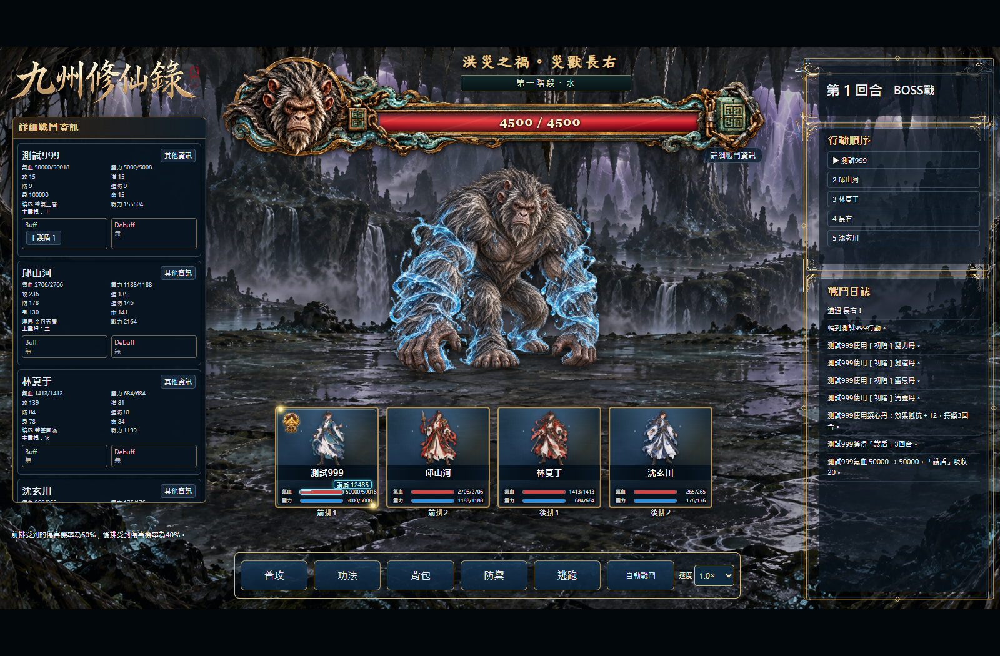
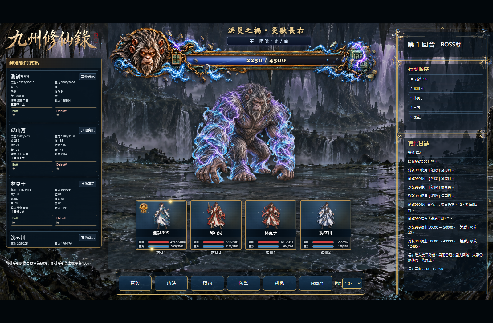
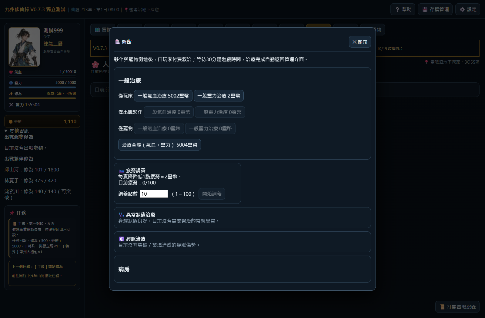
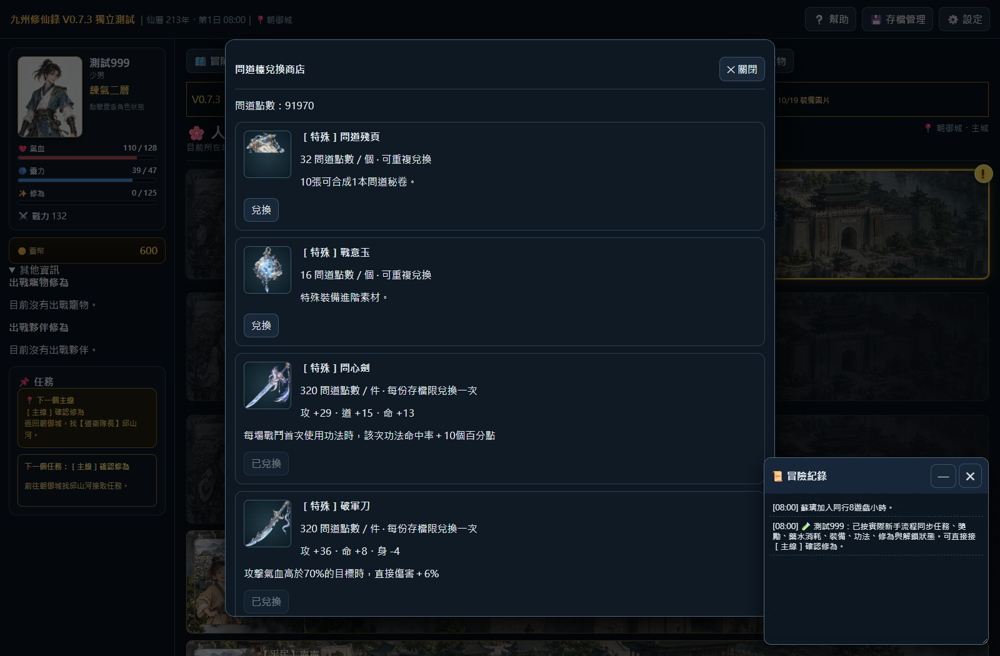
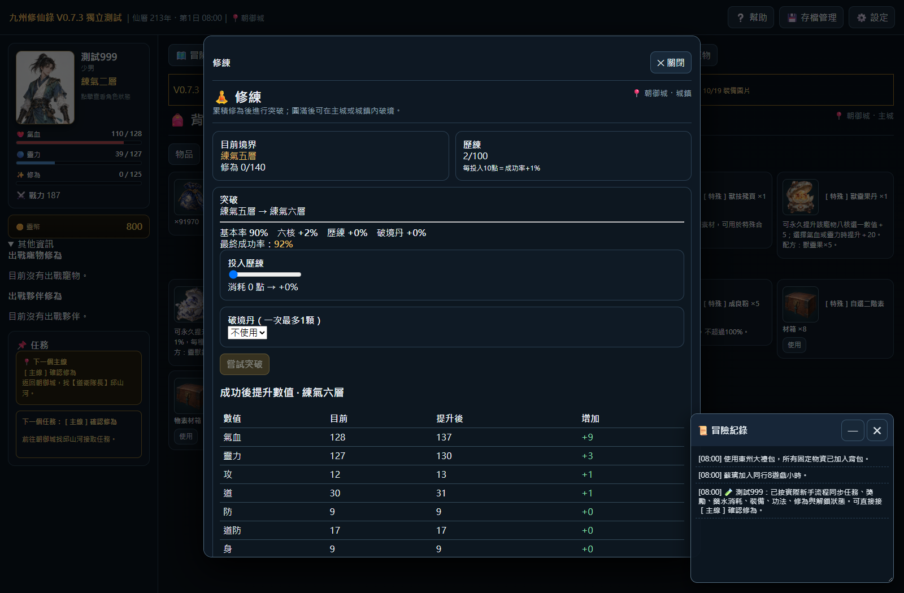
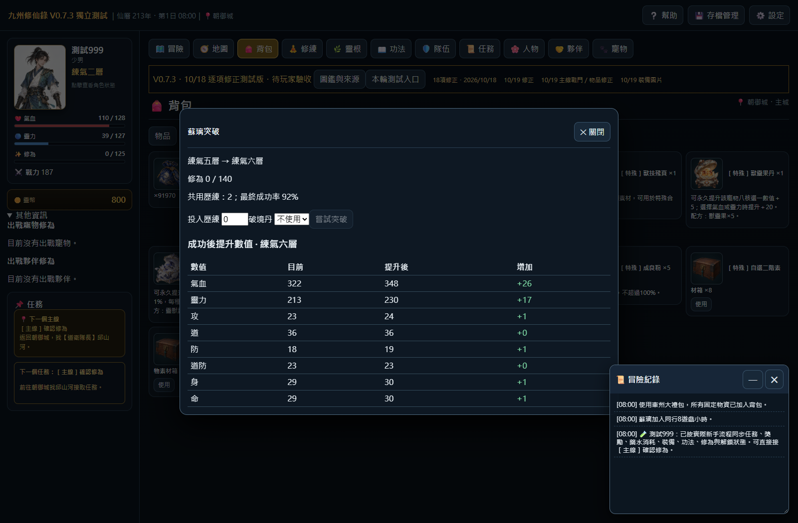

開啟最新可遊玩測試版 · 20261019-revision24-1
本輪23項完成，第3項紀念品歷練待補數字。42項新增驗收與39項回歸檢查通過。正式母檔、正式版本及正式入口保持不變。
| 項目 | 狀態 | 實裝與測試結果 | 程式位置 |
|---|---|---|---|
| 1 · 護盾值 | 已實裝／驗證通過 | 血條上方顯示護盾數字，承傷扣除、破盾消失。 | revision24-combat.js |
| 2 · 問道裝備與五種丹藥 | 已實裝／驗證通過 | 18件裝備採本輪完整數值、位階與效果；補完整商店。五種丹藥35點可重複兌換，鎮心丹改為抵抗＋12、3回合。 | revision24-items.js / revision24-combat.js |
| 3 · 紀念品歷練 | 待補 | 已查明現行領取沒有給歷練；現有原表只有紀念品敘述，沒有獎勵數字。待玩家補充每件數量及重複取得規則。 | baseline-scripts/99-jzw-word-integration.js：jzClaimNpcGift |
| 4 · 缺圖與凝力丹 | 已實裝／驗證通過 | 核對912個現有物品名稱之圖片路徑，缺檔0。凝力丹等五丹沿用既有獨立圖，補齊商店顯示；獸技殘頁新增獨立圖。 | revision24-items.js / revision24-art.js |
| 5 · 一、二階素材箱 | 已實裝／驗證通過 | 換成樸素木箱與鐵包角木箱，共用同一映射；保留開箱內容與數量。 | revision24-art.js |
| 6 · 戰意玉說明 | 已實裝／驗證通過 | 特殊裝備進階素材。 | revision24-items.js |
| 7 · 戰鬥背包排除未開箱 | 已實裝／驗證通過 | 自選護體丹箱等箱子不出現在戰鬥背包；直接呼叫使用亦不消耗。 | revision24-items.js |
| 8 · 長右水／水雷本體 | 已實裝／驗證通過 | 第一階段水元素，第二階段切換水雷立繪；血條與本體均依實際階段換圖。 | revision24-art.js |
| 9 · BOSS勝利後氣血0 | 已實裝／驗證通過 | 玩家倒地而夥伴擊殺長右後至少1氣血，可醫館治療；通用BOSS最終勝利寫回同樣保護。 | revision24-combat.js：ensureBossSurvivor24 / battleWin |
| 10 · 獸魂晶 | 已實裝／驗證通過 | 寵物升星核心素材。 | revision24-items.js |
| 11 · 圖鑑搜尋輸入 | 已實裝／驗證通過 | 更新搜尋結果時保留輸入元件、焦點與選取；中文組字期間不重畫。 | revision24-ui.js：catalogSearch1018 |
| 12 · 東州大禮包 | 已實裝／驗證通過 | 使用按鈕移入物品卡片；實際使用發放與數量正常。 | revision24-items.js：renderBag |
| 13 · 獸靈果丹與靈獸露丹 | 已實裝／驗證通過 | 兩者配方各自專用素材×5；物品庫與材料庫共用計數。公共爐實際製作通過，永久＋5／＋20與屬傷10%上限通過。 | revision24-items.js：petMaterialCount24 / r59ConsumeIngredients |
| 14 · 寵物自選專屬技能箱 | 已實裝／驗證通過 | 打開後可自選該寵物合法池技能。沿用既有合法技能池。 | revision24-items.js |
| 15 · 獸技殘頁 | 已實裝／驗證通過 | 萬獸檯35點兌換改為獸技殘頁；描述為妖物技能相關素材，可用於特殊合成。 | revision24-items.js |
| 16 · 初階寵物用破境丹 | 已實裝／驗證通過 | 寵物境界突破與破境率＋5%。 | revision24-items.js |
| 17 · 中階寵物用破境丹 | 已實裝／驗證通過 | 寵物境界突破與破境率＋8%。 | revision24-items.js |
| 18 · 靈契玉 | 已實裝／驗證通過 | 進階寵物裝備用材料。 | revision24-items.js |
| 19 · 萬獸徽記 | 已實裝／驗證通過 | 採用本輪完整敘述：五星特殊突破及萬獸檯高級兌換憑證。 | revision24-items.js |
| 20 · 寵物秘術卷軸 | 已實裝／驗證通過 | 提升一層境界，不可用於破境；實測圓滿拒用且不扣道具。 | revision24-items.js / 既有JZR.petAdvance |
| 21 · 出售限制 | 已實裝／驗證通過 | 所有［特殊］及自選箱不可出售、不列入出售介面。 | revision24-items.js：saleBlocked |
| 22 · 功法殘卷售價 | 已實裝／驗證通過 | 每個實際出售取得200靈幣。 | revision24-items.js：sellQuote |
| 23 · 突破／破境數值預覽 | 已實裝／驗證通過 | 玩家、永久夥伴與寵物顯示目前、提升後、增加量；玩家與夥伴實際突破後八核與預覽一致。 | revision24-ui.js |
| 24 · 築基圓滿上限 | 已實裝／驗證通過 | 玩家築基圓滿的突破按鈕關閉，直接呼叫亦拒絕；不扣修為、歷練或丹藥。 | revision24-ui.js |
BOSS勝利後的0氣血已修正，長右與通用BOSS寫回路徑均驗證。未開箱的護體丹箱移出戰鬥背包；圖鑑中文組字與逐字輸入保持焦點；突破預覽與實際成功八核一致；鎮心丹不再使用舊身法效果；補回完整問道兌換清單與裝備正名。
紀念品領取目前確實沒有歷練。現存表僅有紀念品敘述，沒有可引用的獎勵數字，故本輪沒有自行發放或宣稱此項完成。請補各紀念品歷練數量與重複取得規則。對象與原始資料清單
回歸：28種一般妖物連續戰鬥、A線2場與B線3波主線、6項裝備操作。控制單位的18件特殊效果驗算另有實際商店、正式施法、手動BOSS、公共爐製作、正常孵化與存讀檔作交叉驗證；未將測試用BOSS旗標或敵方隨從加入正式遭遇設定。
核對912個現有名稱的圖片路徑，缺檔0；已有獨立圖的凝力丹等五丹沿用。內建image_gen製作5張新圖，保留原生解析度與透明度，WebP僅作無損編碼。
全部物品圖片清單 · 生圖提示詞與來源 · 無損驗證 · 10款低階箱外觀替換對應





